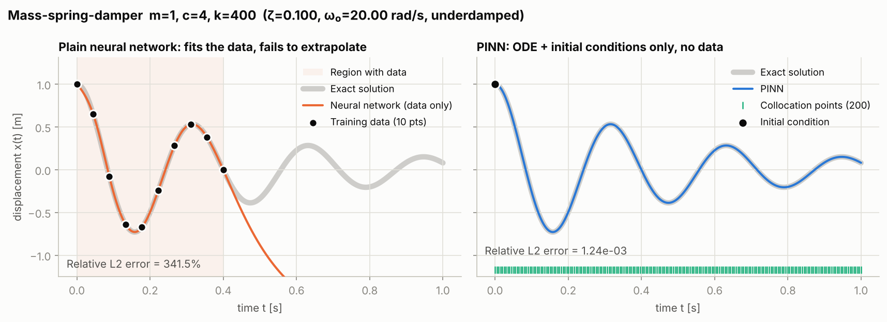
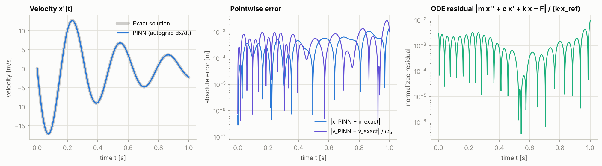
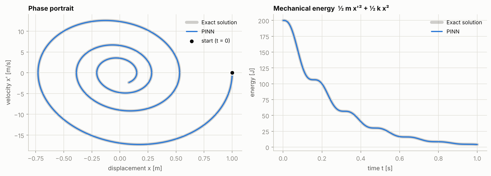
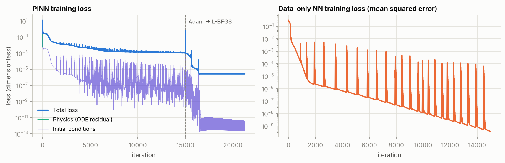
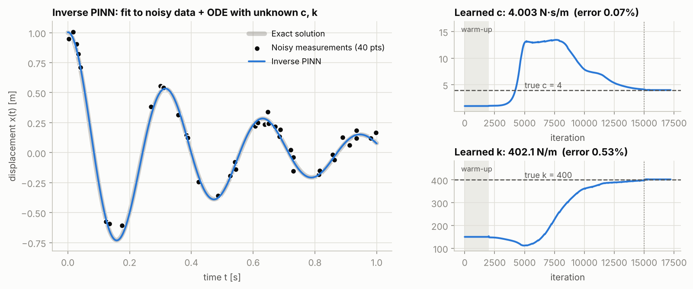

Physics-informed neural networks for a mass-spring-damper
A neural network learns the motion of a damped spring from the equation of motion alone, with no measured data, and lands within 0.12% of the exact answer. A second network watches 40 noisy measurements and works out the damping and stiffness that produced them.
The system
A block of mass \(m\) slides on a frictionless floor, held to a wall by a spring of stiffness \(k\) and a viscous damper with coefficient \(c\). Newton's second law gives one ordinary differential equation for the displacement \(x(t)\):
With no external force, the behaviour is set by the natural frequency \(\omega_0 = \sqrt{k/m}\) and the damping ratio \(\zeta = c / (2\sqrt{km})\). The default case is underdamped: it rings for about three cycles while the amplitude decays.
| Symbol | Meaning | Default | Flag |
|---|---|---|---|
| \(m\) | mass | 1 kg | --m |
| \(c\) | damping coefficient | 4 N·s/m | --c |
| \(k\) | spring stiffness | 400 N/m | --k |
| \(x_0,\ v_0\) | initial displacement and velocity | 1 m, 0 m/s | --x0, --v0 |
| \(F(t)\) | external force \(F_0\cos(\omega_f t)\) | none | --F0, --wf |
| \(T\) | time window | 1 s | --T |
| \(\omega_0,\ \zeta\) | natural frequency, damping ratio | 20 rad/s, 0.1 | derived |
The script compares every model against the closed-form solution (underdamped, critically damped or overdamped, whichever applies) or, when a force is applied, against a high-accuracy Runge–Kutta integration.
Why put the physics in the loss
An ordinary network trained on ten points from the first 0.4 seconds fits those points well and then has nothing to go on. Past the last point its prediction heads off the chart, and its error over the full second is 341%.
The PINN is given no measured points at all. It sees only the equation, checked at 200 times spread across the window, and the two initial conditions. Its error over the same second is 0.12%.

How the loss is built
The network takes a time \(t\) and returns a displacement \(\hat{x}(t)\): three hidden layers of 32 tanh units. Automatic differentiation gives \(\dot{\hat{x}}\) and \(\ddot{\hat{x}}\) exactly, so the equation can be checked at any time without a mesh. The residual is
and training minimises the mean squared residual at the collocation times plus the error in the initial conditions:
Here \(x_{\mathrm{ref}}\) is the size of the motion, the largest of \(|x_0|\), \(|v_0|/\omega_0\) and \(F_0/k\), and \(\lambda_{\mathrm{ic}} = 10\).
What made it train well
- Every term is dimensionless. Dividing by \(k\,x_{\mathrm{ref}}\) turns the residual into \(\ddot{x}/\omega_0^2 + 2\zeta\dot{x}/\omega_0 + x\), so the physics and initial-condition terms are the same order of magnitude whatever units or parameters you use.
- Adam first, then L-BFGS. With a learning rate of 10−3 and a short L-BFGS stage, the PINN stalled at about 15% error, damping the motion too quickly. Starting Adam at 3×10−3 (decaying tenfold over 15,000 steps) and finishing with up to 5,000 L-BFGS iterations brought it to 0.12%.
-
Optional hard initial conditions. With
--hard-icthe output is written as \(\hat{x}(t) = x_0 + v_0 t + (t/T)^2 N(t)\), which satisfies both initial conditions exactly and leaves only the physics term to train.
Checking the answer
Matching \(x(t)\) is not the whole test. The velocity the network implies, the size of the leftover residual and the energy it dissipates should all agree with the exact solution too.



Finding c and k from noisy data
The same idea runs backwards. Given 40 displacement measurements with 4% noise and starting guesses of \(c = 1\) and \(k = 150\), a second PINN learns the motion and both parameters at once. The loss now fits the data and asks the fit to obey the equation with the current estimates of \(c\) and \(k\):
\(c\) and \(k\) are trained as logarithms so they stay positive, and \(\lambda_{\mathrm{phys}} = 100\). For the first 2,000 steps the network fits only the data. Without that warm-up, the parameters chased a still-random network and settled on a wrong, heavily damped solution.
| Parameter | True | Starting guess | Learned | Error |
|---|---|---|---|---|
| damping \(c\) [N·s/m] | 4 | 1 | 4.003 | 0.07% |
| stiffness \(k\) [N/m] | 400 | 150 | 402.1 | 0.53% |
The mass is taken as known. In free vibration, multiplying \(m\), \(c\) and \(k\) by the same factor gives exactly the same motion, so only \(c/m\) and \(k/m\) can be identified from displacement alone. With other random noise draws, \(c\) came out within about 2–3% and \(k\) within about 1%, close to what a direct least-squares fit of the exact solution gets from the same data.

Results
Default settings, CPU, double precision. Errors are relative L2 against the exact solution over the full second.
| Model | What it was trained on | Error in \(x(t)\) |
|---|---|---|
| Data-only network | 10 exact points from the first 0.4 s | 341% |
| Forward PINN | equation and initial conditions, no data | 0.12% |
Forward PINN, forced (--F0 200 --wf 30) | equation and initial conditions, no data | 0.005% |
| Inverse PINN | 40 points with 4% noise, \(c\) and \(k\) unknown | 1.3% |
Run it yourself
One script, Python 3.9 or newer. A full run with all three animations takes a few minutes on a laptop CPU; no GPU needed.
-
Get the code.
git clone https://github.com/YOUR-USERNAME/pinn-mass-spring-damper.git cd pinn-mass-spring-damper -
Install the dependencies. The CPU build of PyTorch is a much smaller download.
pip install torch --index-url https://download.pytorch.org/whl/cpu pip install -r requirements.txt -
Train and render. Graphs, animations, the trained model and a
results.txtsummary go topinn_outputs/.python pinn_mass_spring_damper.py
No Python on your computer? Open the repository's Actions tab, choose Run PINN, then Run workflow. GitHub trains the models with the parameters you enter and attaches every graph and animation to the run as a download.
Common variations
| Command | What it does |
|---|---|
--c 1 --k 100 | a different oscillator |
--c 50 | overdamped: no oscillation |
--F0 200 --wf 30 | forced vibration, \(F(t) = 200\cos(30t)\) |
--x0 0 --v0 5 | start at rest position with an initial push |
--hard-ic | build the initial conditions into the network |
--noise 0.1 --n-obs 20 | harder inverse problem: noisier, fewer measurements |
--no-anim | graphs only, much faster |
--video both | save MP4 as well as GIF (needs ffmpeg) |
--help | list all options with their defaults |
References
- M. Raissi, P. Perdikaris and G. E. Karniadakis, “Physics-informed neural networks: A deep learning framework for solving forward and inverse problems involving nonlinear partial differential equations,” Journal of Computational Physics 378 (2019) 686–707. doi:10.1016/j.jcp.2018.10.045
- I. E. Lagaris, A. Likas and D. I. Fotiadis, “Artificial neural networks for solving ordinary and partial differential equations,” IEEE Transactions on Neural Networks 9(5) (1998) 987–1000. The source of the hard initial-condition trick.
- B. Moseley, “So, what is a physics-informed neural network?” and its companion code, which popularised the damped oscillator as a first PINN example.